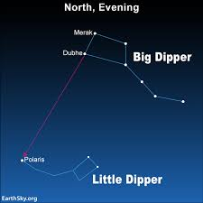
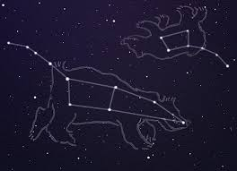

Ursa Major, also known as the Great Bear, is one of the most recognizable constellations in the night sky. It is best known for containing the asterism called the Big Dipper, which is made up of seven bright stars that form a distinctive shape resembling a ladle or dipper. The Big Dipper is often used as a navigational tool, as the two stars at the end of the "bowl" point towards Polaris, the North Star. Ursa Major has been known since ancient times and has been featured in various mythologies and cultures around the world.
 